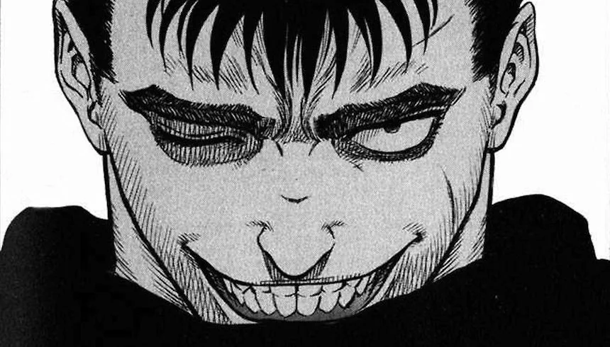
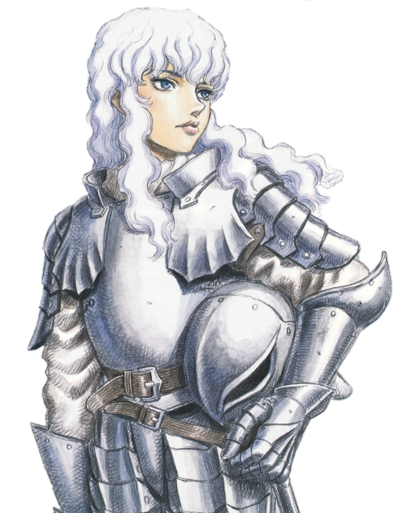
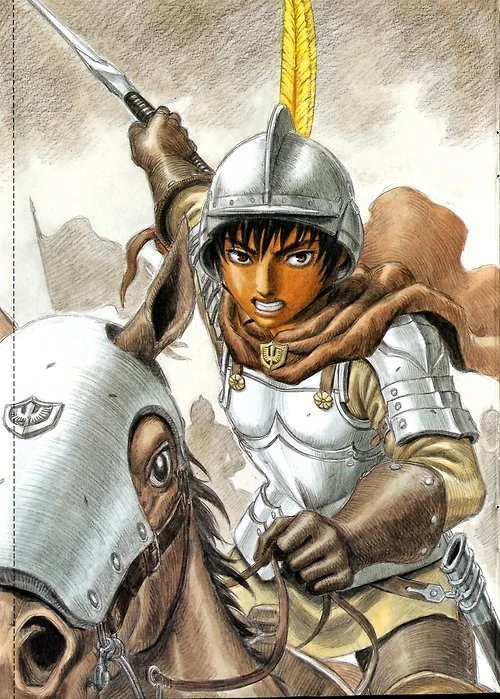

"Si uno no es capaz de hacer lo que le plazca con su propia vida, está mejor muerto." Es capaz de hacer lo que sea por su objetivo, sin importar por cuántos peligros pase.
Personajes
Guts
Griffith
"En este mundo, existen personas que nacen como llaves que mueven el mundo, al margen de las castas y las clases promulgadas por los propios humanos. Un estamento especial y verdadero, establecido por las inquebrantables leyes del universo. ¡¡Gente con poder divino!!" Incluso cuando era niño, se puede entrever la ambición de Griffith. Es en los callejones de su ciudad de la infancia donde él fija por primera vez sus vistas en obtener su propio reino. Su actitud tiene múltiples facetas durante los primeros años de la Banda del Halcón: a veces despreocupadas y casi infantiles, y otras veces feroces.
Casca
"Yo sólo quería... empuñar la espada para protegerle." Casca es presentada como una guerrera de carácter fuerte y serio, con total devoción a Griffith. Su lealtad hacia él le hizo querer servir al Halcón como su espada en la búsqueda del sueño de este. Es por ello que siente celos de la admiración de Griffith hacia Guts.
